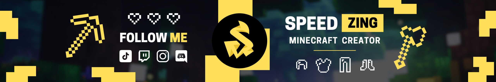
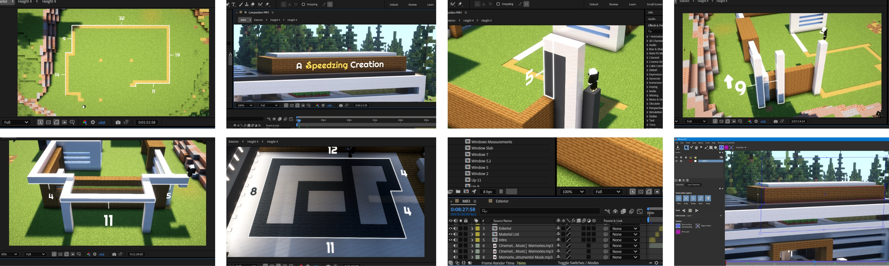
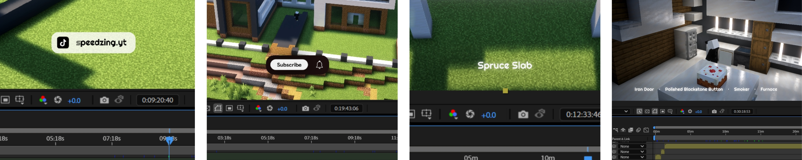
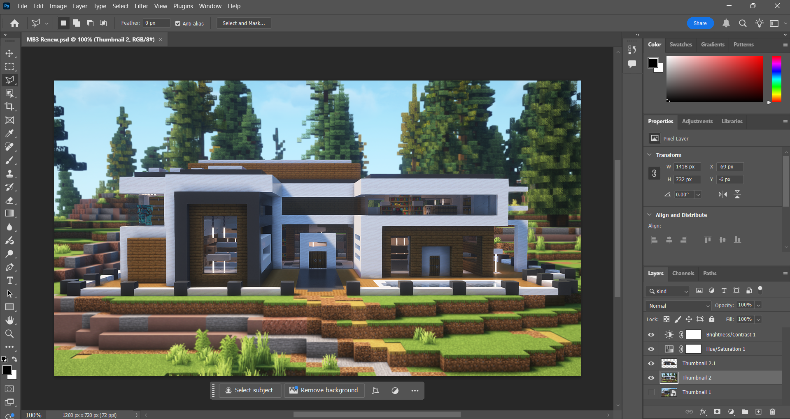
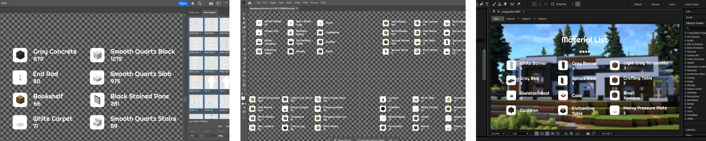

Speedzing Channel
Content Creator for Speedzing's Official Youtube Channel
Speedzing is my original project, where I design and create content for the YouTube channel. I craft captivating thumbnails and edit Minecraft footage for upload on the platform. Over time, I improved my logo and overall brand design through continuous content creation. This project has brought me nothing but joy, it helps me escape the reality of proffesional work and lets me push out my creativity without restraints. To start off this project breakdown, below is my channel banner, it was designed in canva by me to match the minecraft and gaming niche and attract the right audience.
I use Adobe After Effects to make my videos look more exciting by using 3D Camera Tracker and Mocha AE to place elements on walls and floors, and adding effects that make things pop out glow and grab attention. I also apply smooth transitions, lighting adjustments, and filters like blur or contrast changes to keep everything looking clean.
A big part of my editing is cinematography, which means picking the right camera angles so viewers can easily follow my tutorials. I carefully choose background music that blends well with the game’s original sound while adding extra sound effects for text animations and movements, also making sure captions or CTA's (Subscribe, Tiktok, or Instagram Pop-Ups) enter and exit smoothly.
I design all my thumbnails in Adobe Photoshop, where I make the main build stand out by outlining it and blurring the background. To make sure the audience’s catch while scrolling is the build itself For extra details, I use Adobe Illustrator to create small vector designs and material lists, which I later bring into After Effects to blend into my final video.
 I run five different social media accounts for my channel, one of them is my Twitch and it is currently innactive. All my social media links are in my Linktree, making it easy for people to find everything in one place:
- Youtube – Where I post my main videos.
- Instagram – I share short clips on IG Reels, thumbnails on posts, and extra build shots to attract more viewers.
- Tiktok – Mostly reposts of my Instagram Reels and YouTube Shorts to reach a wider audience.
- Patreon – Supporters can subscribe to three different plans, with the best plan giving them early access to builds, world downloads, and exclusive content.
- Discord – A place for my community to chat, share ideas, and get updates about new videos and projects. Some Patreon perks are also managed here.